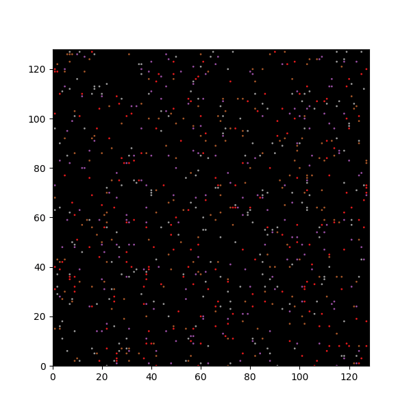
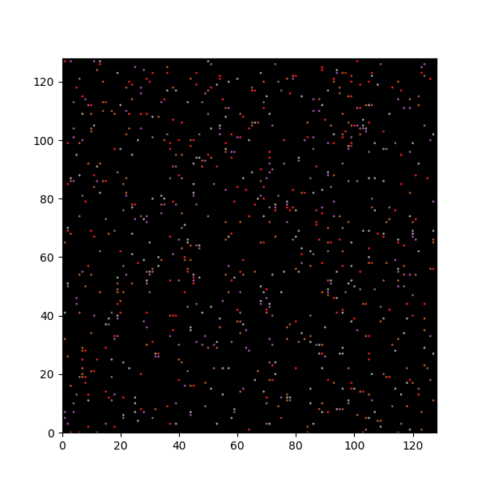
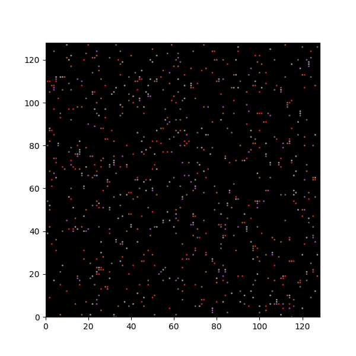

Week 3
Tasks
-
- Using pip to store Python packages.
- The environment on BluePebble can be set up using this script.
- Conveniently, the
PATHof a user is kept even when using SLURM, so the packages installed through pip should still work (need to test this). Code ran this week was light enough so I ran it on the login node.
Summary
- On BluePebble, the environment for PEP was set up to satisfy all dependencies (I think).
protobufminimum dependencies fortensorflowis different on BlueCrystal than on BluePebble? Need to investigate when we run the model.
- I added to the
README.mdon the repo to reflect how to set this all up. - To run the code up to generating snapshots:
- Run
sampler.pyto populate datasets. - Adjust
tumblevariable invideo.py(location here). - Run
video.py. The video is saved assrc/myAnimation.gif, transfer that out or rename it before running again with a different tumble value.
- Run
Some animations
You might need to zoom in a bit to see the patterns more clearly.



This reflects the effects described in the Method section of the Soto and Golestanian paper.